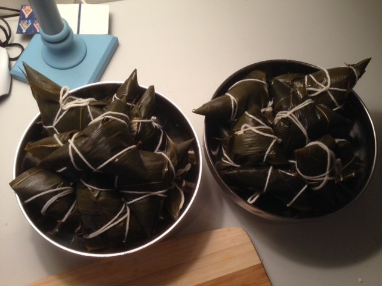

Fig.1 - Meat Zongzi
Recipe 1
- Materials: Sticky rice, Reed leaf, Pork, Soy sauce, Sugar, Salt, Cooking wine, String
- Put sticky rice in warm water over one night
- Boil reed leaves for 30 minutes and leave them in hot water for 2-3 hours
- Mix pork with proper soy sauce, sugar, salt and cooking wine for 3 hours
- Put the sticky rice in reed leaves and wrap the leaves
- Put wrapped Zongzi in water and boil them 4 hours